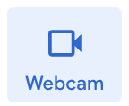

In this codelab, you'll make your own machine learning model and integrate it into your own Scratch project!

What you'll learn
- Use conditional (if) blocks to check for class identification.
- Use Teachable Machines to make a machine learning model.
There will be no remixable Scratch workspace for this project because it involves technology that is not yet compatible with Scratch. You currently are unable to immediately save to your workspace.
That being said, there is a way to still save your project, which will be explained later on.
First, we are going to make our own machine learning model using Teachable Machines.
Steps
- Navigate to this link.
-
Go the menu bar in the top left corner of your screen, and click on
"New Project".
-
Click on "Image Project".
-
There are two types of image inputs you can use for this project:
- Images from your webcam
- Images that are files on your computer
In this section, you're going to import data from your webcam to train your very own learning model with!
If your webcam is not working, please move to the next page to learn about how to import image files as your data.
Steps
-
You should be at a page that looks like this:

-
We'll start with you not raising your hand. Under Class 1,
click "Webcam" and hold down on "Hold to Record" to take images.


-
Repeat the previous step, but this time with your hand raised and
under Class 2. It should look something like this:
-
Finally, label your two classes to be appropriately descriptive
(i.e. "Normal" and "Hand Raised") by clicking on the pencil icon by
the class name.
In this section, we're going to go over how to use image files as your data to train your model.
If you already have collected data through your webcam, please move onto the next page.
In the following steps, we'll be explaining how to train your model to detect when you have your hand raised and when you do not. This is just an example of two classes you could make.
Steps:
- Before you start the data collection, you're going to need to move the image files to your Google Drive. Go to this link.
-
Right click on "CodeIt Teachable Machines Image Files".

-
Click on "Add shortcut to Drive" in the popup menu.
-
Go back to the Teachable Machines tab. You should be at a page that
looks like this:
-
For Class 1, click on the "Upload" button.
-
Next, click "Import images from Google Drive".

-
Double click into "CodeIt Teachable Machines Image Files". If it
doesn't appear at the top, search for it in the search bar.
- Select the "Class 1 Training Dataset" folder.
-
Repeat steps 5 - 8 but for Class 2 and using the "Class 2 Training
Dataset" folder. By this point, your two classes should look
something like this:

-
Finally, label your two classes to be appropriately descriptive
(i.e. "Normal" and "Hand Raised") by clicking on the pencil icon by
the class name.
Steps:
-
Now that you've collected all your training data (whether that be
through your webcam or with image files), click the "Train Model"
button. Make sure to not switch tabs while you're doing
this!
-
Now it's time to test the model you've created! The output shows how
confident your model is in its prediction. Notice that the model
only recognizes the classes you've provided.
Next, you're going to learn how to export your model so you can use it in your Scratch project.
Steps:
-
After training and testing your model, click the "Export Model"
button.
-
Make sure you're in the "Tensorflow.js" tab and that "Upload
(shareable link)" is selected. This should be the default setting so
you shouldn't have to change anything.
- Click the "Upload my model" button to get a shareable link of your model. You need to press the "Update my cloud model" button if you make changes to your model after this export.
-
Copy the shareable link by clicking the "Copy" button under the
"Your sharable link" section.
It's finally time to add the model you've made and integrate it into Scratch!
Steps:
- Navigate to this link. The web tool you are working with is not optimized for the traditional Scratch experience. Consequentially, you will not be able to remix this project or save it to your account immediately. There's a separate process for saving this project, which you'll go over later on.
-
On the bottom left corner, click the Extensions button.
-
Click the first extension "Teachable Machine", which should
automatically add the extension for you and bring you back to the
original Scratch page. (Make sure to allow camera access if
possible!)
-
Click into the "Teachable Machine" section.
- Paste the link for the shareable link for your learning model into the "use model" block. You do NOT need to drag the block into your workspace. Pasting the link into this block will "load" the model into your whole Scratch project.
-
Wait for a green arrow to appear next to the "Teachable Machine"
title.
-
To test your model out, check the "model prediction" block. A box
labeled "Teachable Machine: model prediction" will pop in the
landing area and indicate what your model predicts.
Next, we're going to program your "Sprite1" to move depending on whether you're raising your hand or not.
Steps:
- Keep the sprite moving forever
-
Use the prediction outcome of your model to move the sprite 2 steps
at a time.
So far, this tutorial has shown you how to make a model that predicts whether or not you have your hand raised. Now, it's your turn. If you want to, create a classifier for yourself that detects something else (i.e. whether you have your thumbs up or down, different colors, etc.). You can use the same one, but try to be creative with what your model can predict!